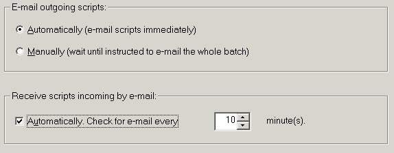
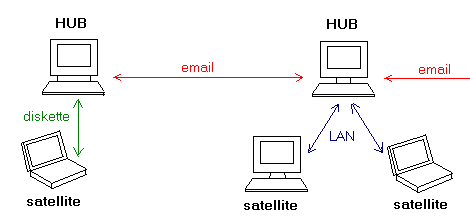

E-mail Configurations
If e-mail is your only transport, you have to make sure that your mail client correctly implements the Simple MAPI interface. Some e-mail clients don't implement Simple MAPI, some have serious bugs in their implementation. We've had very good results with Microsoft Outlook and Outlook Express. Eudora has some problems but it will work. Netscape won't.
After you chose e-mail as your transport, you will be able to run a simple diagnostic that will tell you if your e-mail client will work with Code Co-op.
Finally, you'll be asked to select your email delivery options:

If you don't choose automatic options, you will still be able to send and receive scripts, but you'll have to select "Send mail" or "Get Mail" from the Dispatcher's context menu every time you want to do that.
Finally there is the most tricky e-mail plus LAN configuration.

The thing to remember is that each network of computers must have one and only one hub. This hub will send and receive email from and to other networks (or separate hubs not accessible by LAN). There is one important trick that one has to use in mixed configurations: satellite users should not use their e-mail addresses when joining/creating projects. Instead, they should use their hub's e-mail address. This will not confuse Code Co-op (it has other means of distinguishing users--user ids).

After the setup, you should see an icon on your desktop--the shortcut to Code Co-op. Use this icon to start the program. The Dispatcher should be started automatically.
At the right end of your taskbar you'll see the Dispatcher's icon. You can right-click on it to open its context menu, or you can double-click on it, to see the Dispatcher's window.